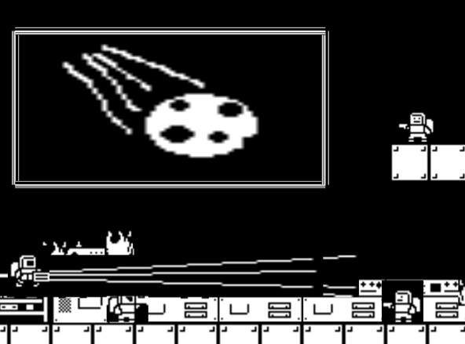
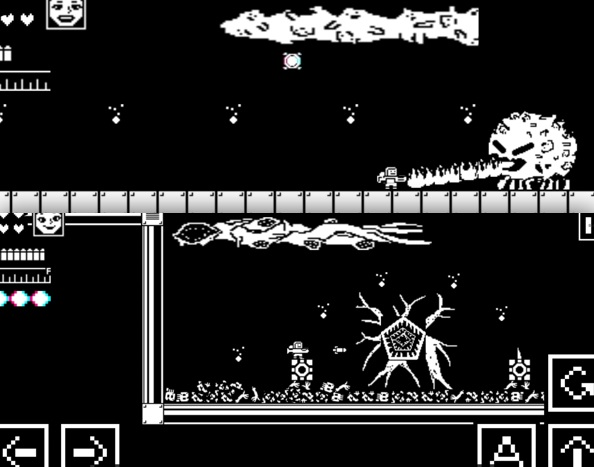
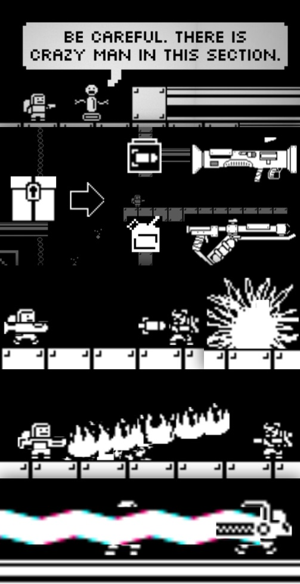

Astronaut Platformer
Astronaut Platformer
8-bit 모노톤 2D 플랫폼 모바일 게임입니다.
64×64 단일 색상 스프라이트와 자원 재사용으로 앱 용량을 27MB로 최적화했습니다.

시스템과 그래픽
리소스를 최소화 하기 위해 그림판으로 모든 Sprite를 단 두가지 색상만 사용하며,
64*64, 32*32 사이즈의 파일로 구성하는 시도를 하였습니다.

몬스터 & 보스
공격 패턴을 가진 보스
서로 다른 공격 방식의 몬스터

무기
기본무기 권총을 제외한 특수무기를
탄약상자에서 구해 탄약관리를 유도